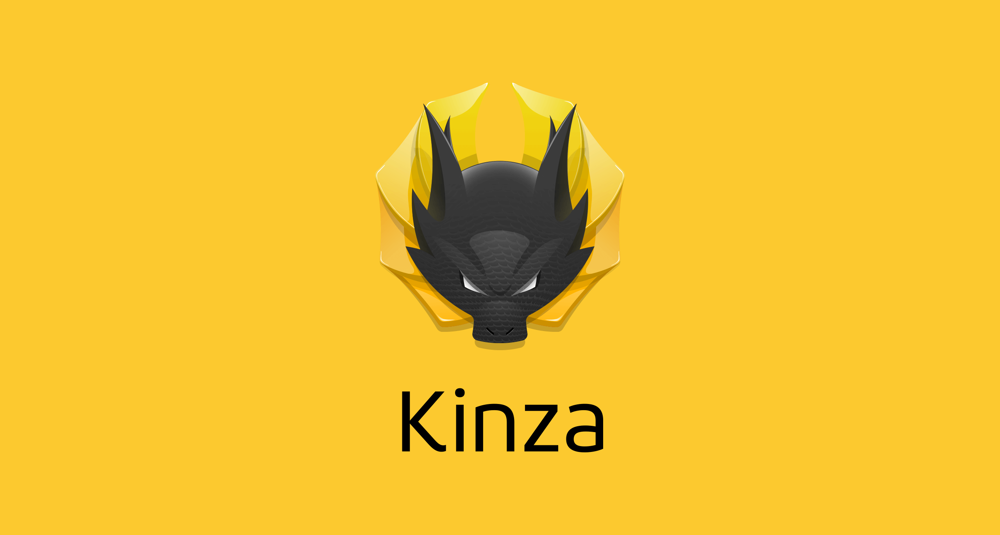
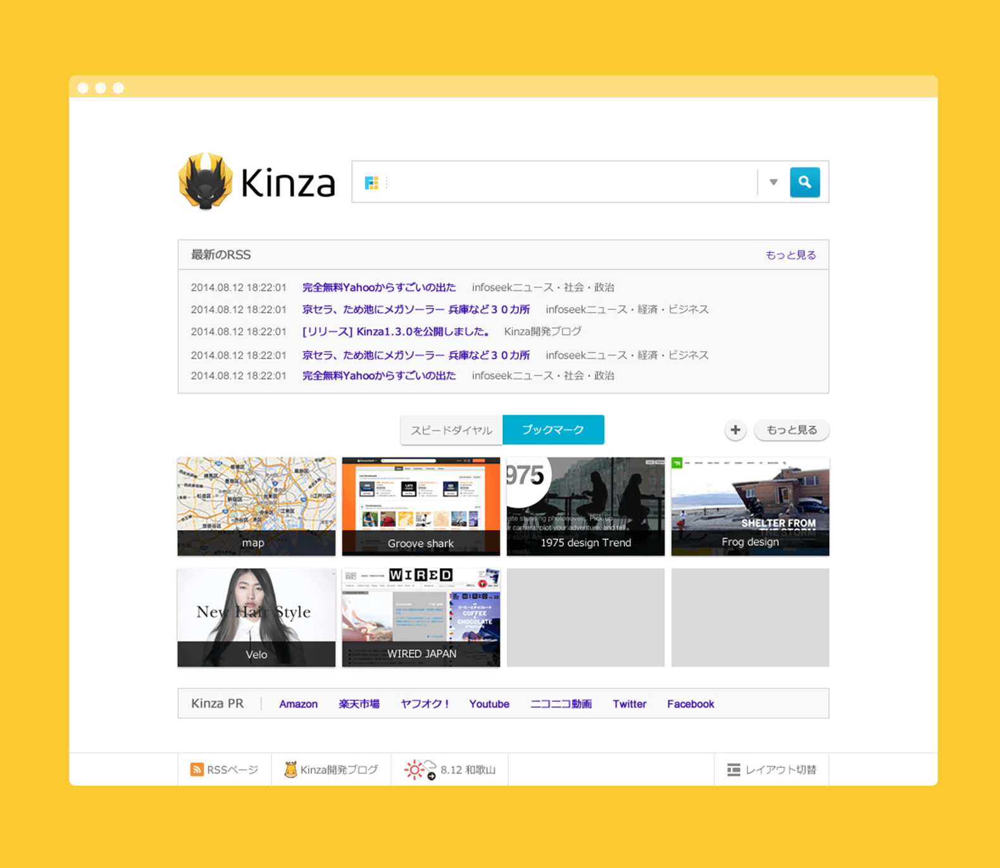
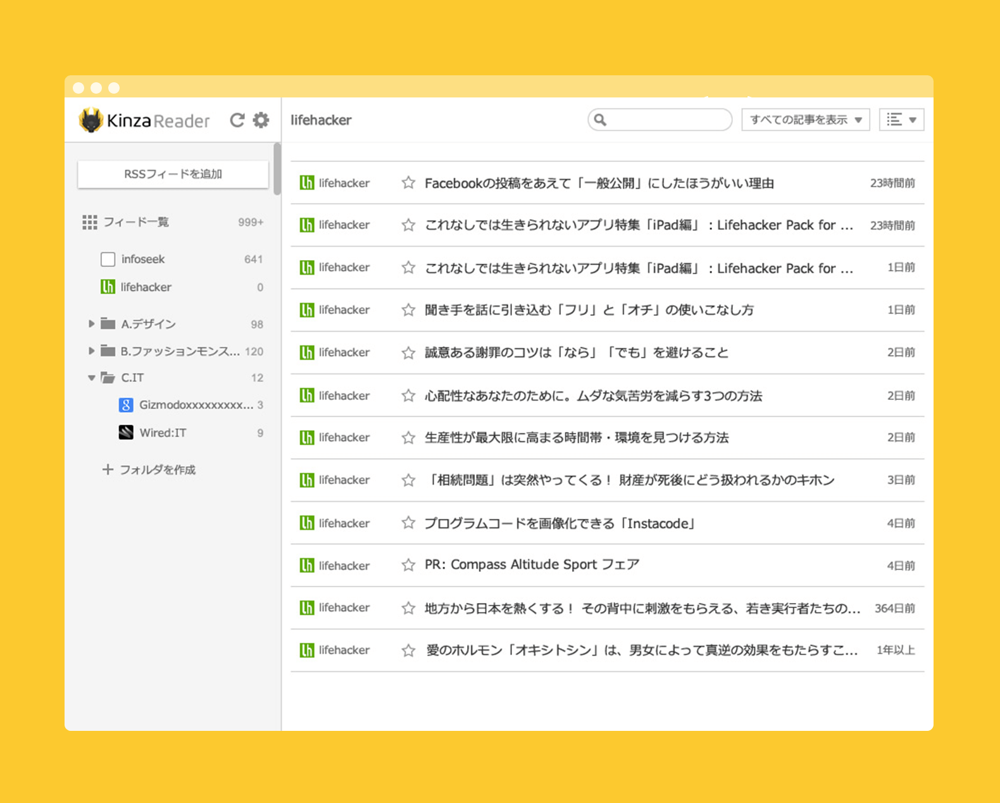

KINZA
2014
LOGO & UI Design
2014
LOGO & UI Design
リソース（原点）を掘り起こす
ブラウザアプリのロゴとUIデザインを担当。
KINZAは、Chromeに搭載されているブラウジングエンジン『クロニウム』をベースとした国産ブラウザアプリです。このアプリは、ユーザーから意見を集め機能を改善し、その過程や成果を全て公開する体制で開発を行っています。ユーザーからの意見の内容は、バグのコメントから新機能の要望や改善のアイデア出しなど、幅広く集めます。参加型の開発体制をとることで、ユーザーとの結つきが強いものになり、着実に業績に繋げているサービスとなっています。
ロゴ開発に参画した段階では、アプリは基本的な機能がようやく実装されたα版の段階でした。β版やリリース版に向けた膨大なタスクをどう処理するか未決の状態で、事業の方向性も明確な状況ではありませんでした。またブラウザ業界はchromeをはじめ海外勢が圧倒的なシェアを誇り、リリースしたとしても残り続けるには相当な困難だと想定できていました。これら事業の方向性や膨大なタスクに対処する前に、開発する理由や方向性をはっきりさせ無駄のない工程をつくる必要がありました。そのための起爆剤となるためロゴのデザインをおこないました。

アプリロゴ
名前は『キンザ』と決まっていて、そこからストーリーを構成しました。キンザはクライアントの創業地である日本橋が江戸時代に小判を発行する場所『金座』からつけられました。『金座』は人やモノやカネが集まる日本で重要な場所の１つで、跡地には日本銀行がおかれ長く日本経済の要であります。KINZAでは経済の要である『金座』で日本橋の象徴の『麒麟像』を掛け合わし、『情報』とそれを扱う『人々』や『アイデア』が集まる場であり続ける意味を込めて制作しました。競合ブラウザと並べても見応えのあるロゴにするため、あえてスキューモフィズムのデザインとしました。

ブラウザスタートページ

ブックマークページ
ロゴデザインと並行して、ブラウザのUIのデザインも担当。クロニウムがベースとなるアプリのため機能面はChromeを出発点としています。主な機能として検索、ブックマーク、アプリ側の通知、RSSなどが並び、それらはレイアウトの変更が可能で、ユーザーのスタイルにあわせてUIが変化できます。どのレイアウトになったとしても画面構成として破綻しない設計をおこないました。